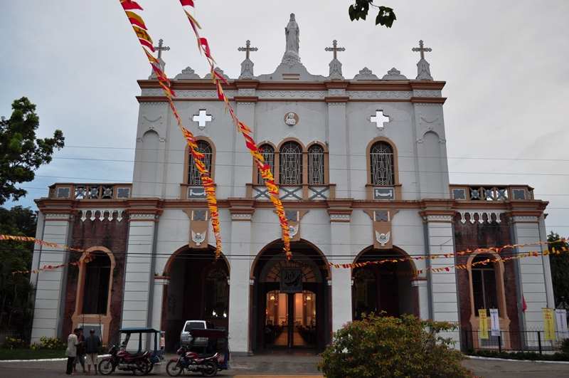

Spanish missionaries arrived in Binalbagan in 1571. They spread
outward and reached Bago, a settlement along Bago River, in 1575.
The word bago may mean a tree or shrub.
The town flourished in the next two centuries. Its riparian
settlement rich with resources and the river that served as
significant transport highway attracted significant migration
particularly people from Iloilo. It was organized into a town in
1800. The church on other hand became a parish in 1822
Parishes in the island of Negros were handed over to Augustinian
Recollects from the diocesan clergy after the assigned parish priest
was assigned to another mission or passed away. The Recollects
assumed the parish in 1882.

Mass Schedule
Below is the weekly mass schedule of Saint John the Baptist Parish in Bago City, Negros Occidental from January 1, 2024 to January 7, 2024.
Please reach out to the church for an updated schedule.